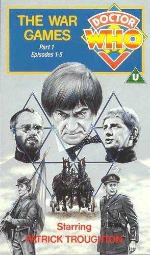
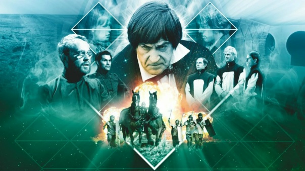
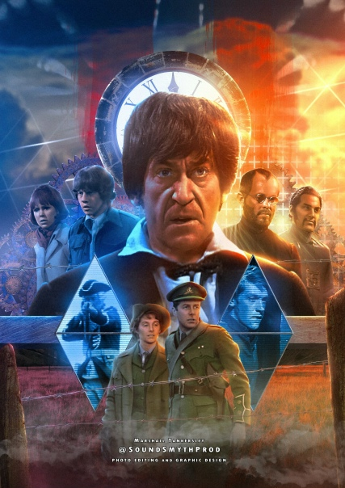
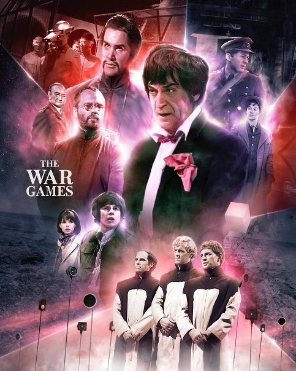
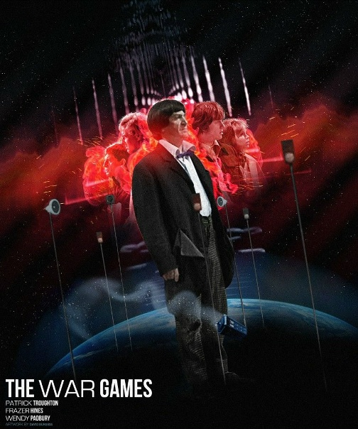

Эра Второго Доктора (6 сезон)
<<< НАЗАД ||| 7. Военные игры ||| ДАЛЬШЕ >>>
Субтитры: Русские и Английские |  |
|---|---|
Субтитры: Русские {RebelProject} и Английские | |
9 апреля - 21 июня 1969
10 эпизодов по 25 мин.
| Все эпизоды имеются в архиве: * 2, 5, 8, 9 - сохранились - 16mm t/r * 1, 3, 4 ,6, 7, 10 - найдены в 1978 году - 16mm t/r * Имеется объединенная, укороченная, цветная версия |
|---|
 |  | помощник | помощник |
Солдат похищают из разных эпох — от Первой мировой до далёкого будущего — и заставляют сражаться в искусственно созданных зонах, будто в чудовищной военной игре. Доктор, Джейми и Зои оказываются посреди этого кошмара: они не просто спасают людей, а вскрывают систему, где человеческая память и воля — расходный материал. Серия подводит к одной из самых судьбоносных развязок в истории сериала: впервые появляются Повелители Времени, они судят Доктора за вмешательство и заставляют его регенерировать. Финал эпохи Второго Доктора — прощание с Джейми и Зои и начало совершенно новой главы.
 VHS - февраль 1990 | DVD - 6 июля 2009 * Версия в нашей группе | Blu-ray - 21 апреля 2025 * Урезанная серия в цвете |
|---|








